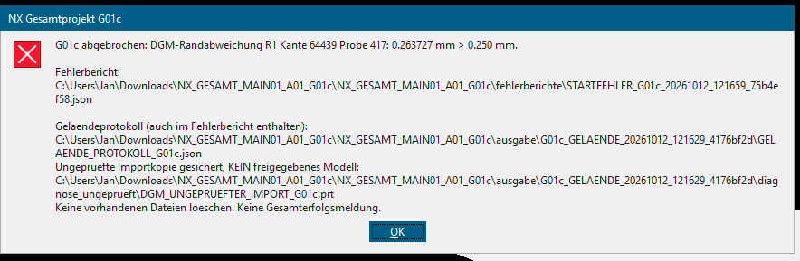

Status: Neue Exportdarstellung implementiert und unabhängig in Open CASCADE geprüft. Noch kein eigener Import dieser neuen Datei in NX. Die exakte interne Ursache der bisherigen Randabweichung ist nicht bewiesen.
1 · Tatsächlicher Befund aus deiner NX-Sitzung
| Prüfung | Ergebnis im G01c-Bericht |
|---|
| Flächenpunkte | 16.748 von 16.748 ausgewertet; maximale Differenz 7,0711 × 10⁻⁸ mm zur Quelle. Kein Nachweis entsprechender Genauigkeit des realen Grundstücks. |
| Rand | 285 Kanten: 82 / 1 / 101 / 101 an vier Seiten. Die einzelne R1-Kante überspannt etwa 82 m. |
| Erster Randabbruch | Probe 417, Kante 64439: 0,2637268145 mm > 0,25 mm. Überschreitung 0,0137268145 mm. 418 von 1.591 Randabfragen einschließlich der fehlgeschlagenen Abfrage ausgeführt. |

Die Zielkoordinate aus NX liegt rechnerisch ca. 0,2634566 mm neben der exakten ursprünglichen Randkurve. Der Prüfpunkt selbst liegt auf dieser Quellkurve. Das unterscheidet noch nicht zwischen einer abweichenden importierten 3D-Kante und einer ungenauen Nahpunktsuche. Die zugrunde liegende importierte Trägerfläche hat die 16.748 Punktvergleiche bereits bestanden; ihre Trimmung ist damit noch nicht vollständig geprüft.
Kompakter Originalbefund und nachgerechnete Differenzen
2 · Änderung an der CAD-Datei, nicht am Höhenraster
Das Gelände bleibt eine einzige bilineare Fläche. Ihre 8.466 Stützpunkte, Grade, Parameterknoten, Vielfachheiten und Gewichte sind nach STEP-Rückimport exakt gleich. Der Rand wird an den vorhandenen Rasterpunkten in 366 echte LINE-Kanten aufgeteilt. Jeder Abschnitt beschreibt eine bereits vorhandene gerade Strecke zwischen zwei Rasterpunkten. Es entsteht kein Dreiecksnetz und keine neu angepasste Oberfläche.
| Vorher | Neue aktive Quelle |
|---|
| Vier lange, stückweise lineare B-Spline-Randkurven. | 366 einzelne gerade 3D-Linien mit zugehörigen Parameterkurven. |
GELAENDE_R07_UNVERAENDERT.step
Bleibt als Original im Paket. | GELAENDE_G01d_EXAKTER_SEGMENTRAND.step
Wird automatisch vom aktuellen Importauftrag verwendet. |
Die Datei ist nicht bytegleich zur alten STEP. Ihre Topologie und Prüfsumme ändern sich; Geländehöhen, geometrische Fläche und Randverlauf bleiben gleich. Kein Skalieren, Verschieben, Glätten oder Erhöhen der Prüftoleranz. Auch der fehlende Gebäude-Höhenanschluss wird dadurch nicht ergänzt.
3 · Die vorhandene Kontrolle bleibt aktiv
Keine neuen NX-API-Methoden. Weiterhin 16.748 direkte Flächenpunktvergleiche, Endpunkt-/Kettenprüfung aller importierten Ränder sowie 736 Originalrandproben und drei Zusatzproben je tatsächlicher Kante. Bei 366 Kanten sind das 1.834 Randabfragen. Die CAD-Grenze bleibt 0,25 mm. Andere Unterteilungen sind nur nach bestandener geometrischer Prüfung zulässig.
Keine fehlgeschlagene Rückgabe wird durch einen Quellwert ersetzt. Eine tatsächliche Abweichung von beispielsweise 0,251 mm wird weiterhin zurückgewiesen. Ein bestandener endlicher Vergleich ist keine mathematische Garantie jeder Stelle zwischen Prüfpunkten.
4 · Ausgeführte unabhängige Prüfungen
588 Offline-/Simulationstests, davon 24 neue G01d-Tests, wurden erfolgreich ausgeführt. Die unten verlinkten Protokolle dokumentieren Umfang und Ergebnisse.
Die neue STEP wurde tatsächlich geschrieben, erneut in Open CASCADE eingelesen und als gültige einzelne Fläche mit einer geschlossenen Begrenzung aus 366 LINE-Kanten geprüft. 8.466 Stützstellen wurden zwischen alter und neuer Darstellung verglichen (maximale Differenz 0). Zusätzlich 2.562 direkte Linienpositionsvergleiche und der komplette produktive Vergleichspfad mit 16.748 Flächenpunkten / 1.834 Randabfragen. Eine tatsächliche 2-mm-Veränderung an einer inneren Stützstelle wurde zurückgewiesen.
Die ursprüngliche Fehlerrückgabe 0,2637268145 mm bleibt im Regressionstest ein Fehler. Die Simulation erklärt sie nicht nachträglich für zulässig. Weitere Tests kontrollieren fehlende Ränder, manipulierte Quellen und den reinen Geländestart ohne Hausaufbau.
Realer CAD-Quellenvergleich · Endgültiges Testprotokoll · Strukturiertes Testergebnis
5 · Nächster Lauf
Ganzes Paket neu entpacken; nicht mit G01c mischen. Eigene NX-Arbeit speichern. Im neuen Hauptordner über Journal abspielen starten:
04_NUR_GELAENDE_MIT_PROTOKOLL.py
Kein Teil vorher anlegen und kein manueller STEP-Import. Ablauf: Quelle prüfen → Import → ungeprüfte Sicherung → Flächen-/Randprüfung → bei Erfolg abschließend speichern. Das Haus wird nicht neu erzeugt. Ein vollständiger Umgebungs- oder Projektaufbau ist ein anderer Schritt.
Bei erneutem Abbruch genügt zunächst die neue STARTFEHLER_G01d_….json. Die Parameter- und Randdaten stehen darin. Originaldateien behalten; keine Prüftoleranzen manuell ändern.
Vollständige Startanleitung